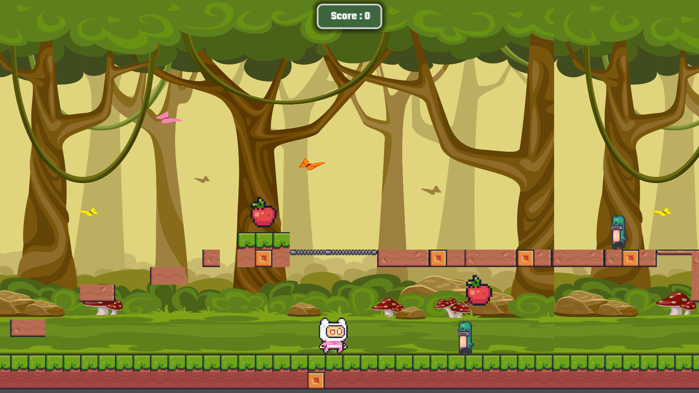

Valdoria: Echoes of Betrayal
Un jeu RPG 3D développé avec le moteur Godot 4. Implémentation de mécaniques de gameplay complexes et
conception de combats de boss stratégiques.
Jouer sur Browser
Calculatrice en C#
Développement d'une calculatrice simple en C# avec interface console, utilisant les opérateurs de
base et la gestion des erreurs pour une utilisation robuste.
Conception de Circuits
Création d'un projet de maison d'auto gestion de la lumière et du conditionnement d'air. Création de
circuits électroniques fonctionnels sur breadboard, incluant l'utilisation de timers NE555 et de
portes logiques de la série 74LS (74LS90, 74LS47) pour de l'affichage et de la synchronisation.
International Mélodyès
Gestion d'une chaîne YouTube de divertissement musical. Analyse des statistiques de rétention,
optimisation algorithmique et création de contenus percutants au format court.
Jojo Jambo (Shooter 2D)

Mon premier jeu de plateforme 2D avec Godot 4. Un projet d'apprentissage autour des bases du game dev : collisions, animations, level design et mécanique de saut.
Jouer sur Browser